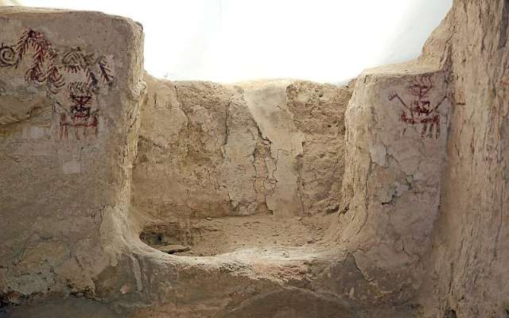

Los hititas y los reinos neohititas. Extendido desde Anatolia central hasta Siria, el reino hitita fue una de las grandes potencias del antiguo Oriente Próximo. Desde el siglo XVII a. C., los hititas levantaron un poderoso reino en Anatolia central con capital en Hattusa, en el actual distrito de Boğazkale (Çorum). El hitita, escrito en cuneiforme sobre tablillas de arcilla, es una de las lenguas indoeuropeas más antiguas que se conocen. La Puerta de los Leones, la Puerta del Rey y el Gran Templo de Hattusa, junto con el santuario rupestre de Yazılıkaya, son Patrimonio Mundial de la UNESCO desde 1986. El Tratado de Kadesh, firmado en el siglo XIII a. C. entre el rey hitita Hattusili III y el faraón Ramsés II, suele citarse como uno de los tratados de paz escritos más antiguos que se conocen; una de sus copias en arcilla se expone en los Museos Arqueológicos de Estambul. Antes de los hititas, Kültepe (Kanesh), cerca de Kayseri, fue un centro comercial de mercaderes asirios, y sus tablillas están entre los documentos escritos más antiguos de Anatolia. Tras el colapso del reino hitita hacia el 1200 a. C., surgieron en el sureste los reinos neohititas. Karatepe-Aslantaş en Osmaniye, la cantera y taller escultórico de Yesemek en Gaziantep y Arslantepe en Malatya, Patrimonio de la UNESCO desde 2021, son lugares clave de esta época. La colección hitita más rica está en el Museo de las Civilizaciones de Anatolia, en Ankara; los museos de Çorum y Boğazköy también son imprescindibles.
Extendido desde Anatolia central hasta Siria, el reino hitita fue una de las grandes potencias del antiguo Oriente Próximo.
Desde el siglo XVII a. C., los hititas levantaron un poderoso reino en Anatolia central con capital en Hattusa, en el actual distrito de Boğazkale (Çorum). El hitita, escrito en cuneiforme sobre tablillas de arcilla, es una de las lenguas indoeuropeas más antiguas que se conocen. La Puerta de los Leones, la Puerta del Rey y el Gran Templo de Hattusa, junto con el santuario rupestre de Yazılıkaya, son Patrimonio Mundial de la UNESCO desde 1986.
El Tratado de Kadesh, firmado en el siglo XIII a. C. entre el rey hitita Hattusili III y el faraón Ramsés II, suele citarse como uno de los tratados de paz escritos más antiguos que se conocen; una de sus copias en arcilla se expone en los Museos Arqueológicos de Estambul. Antes de los hititas, Kültepe (Kanesh), cerca de Kayseri, fue un centro comercial de mercaderes asirios, y sus tablillas están entre los documentos escritos más antiguos de Anatolia.
Tras el colapso del reino hitita hacia el 1200 a. C., surgieron en el sureste los reinos neohititas. Karatepe-Aslantaş en Osmaniye, la cantera y taller escultórico de Yesemek en Gaziantep y Arslantepe en Malatya, Patrimonio de la UNESCO desde 2021, son lugares clave de esta época. La colección hitita más rica está en el Museo de las Civilizaciones de Anatolia, en Ankara; los museos de Çorum y Boğazköy también son imprescindibles.
Dónde ver esta época
 HattusaÇorum
HattusaÇorum Museo de BoğazköyÇorum
Museo de BoğazköyÇorum Museo y yacimiento de AlacahöyükÇorum
Museo y yacimiento de AlacahöyükÇorum Museo de ÇorumÇorum
Museo de ÇorumÇorum Yacimiento de KültepeKayseri
Yacimiento de KültepeKayseri Museo de las Civilizaciones de AnatoliaAnkara
Museo de las Civilizaciones de AnatoliaAnkara Museos Arqueológicos de EstambulEstambul
Museos Arqueológicos de EstambulEstambul Museo y yacimiento de Karatepe-AslantaşOsmaniye
Museo y yacimiento de Karatepe-AslantaşOsmaniye Yacimiento de YesemekGaziantep
Yacimiento de YesemekGaziantep
Yacimiento de ArslantepeMalatya🎓 Pon a prueba lo aprendido
1. ¿En qué provincia está hoy Hattusa, la capital hitita?
2. El Tratado de Kadesh se firmó entre los hititas y…
3. ¿Cómo se llama el santuario rupestre cercano a Hattusa?
4. Kültepe (Kanesh) fue centro comercial de mercaderes…